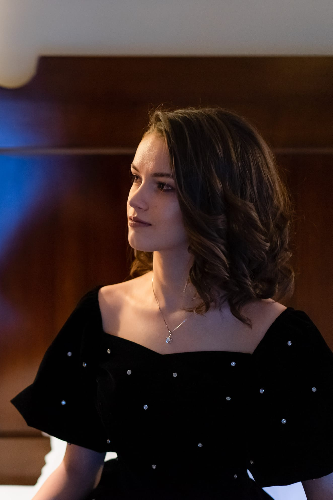

Daria Ciobanu
Tech enthusiast, team leader, and programmer.
About Me
I am a highly motivated and responsible individual with a natural sense of leadership and a strong passion for technology. Throughout my experiences as a team leader, mentor, and trainer, I've learned the importance of bringing people together and fostering a supportive and collaborative environment. My leadership style is centered around empathy, effective communication, and a keen awareness of how my actions impact others.
With a focus on listening and providing clear, constructive feedback, I strive to support others' growth while maintaining professionalism and a positive example. I am committed to continuous personal and professional development, especially in areas such as computer vision, AI, and cybersecurity. I thrive under pressure and am always eager to embrace new challenges, making the most of every opportunity to learn and grow.
Work Experience
Team Leader and Coach
Organization: The Emperor Robotics Team
Location: Drobeta Turnu Severin
Duration: September 2020 – June 2023
- Led the programming team for the robotics group, focusing on developing skills in Java.
- Held the role of coach, overseeing the team for four years, fostering communication, and honing organizational skills.
- Encouraged team members to share ideas, enhancing collaboration among peers and mentors.
Trainer
Organization: Logiscool
Location: Drobeta Turnu Severin, Romania
Duration: October 2021 – August 2022
- Served as a programming trainer, providing an empathetic approach that fostered a supportive environment for students.
Mentor
Organization: The Emperor Robotics Team
Location: Drobeta Turnu Severin
Duration: September 2023 – Present
- Currently mentoring younger team members, providing guidance and feedback to aid in skill development within robotics.
- Handles team organization and ensures all members have meaningful tasks, supporting a cohesive workflow.
Projects
FPGA Video Transmission
Developed a video transmission system using an FPGA board, focusing on real-time video processing and transmission.
Technologies Used:
- Verilog
- VHDL
- Python
Skills
Education
High School Graduate
Institution: Colegiul National Traian
Location: Drobeta Turnu Severin
Duration: September 2019 – July 2023
Achievement: Graduated as Valedictorian
Bachelor of Computer Science (Year 2)
Institution: Politehnica University of Timișoara
Location: Timisoara
Duration: September 2023 – Present